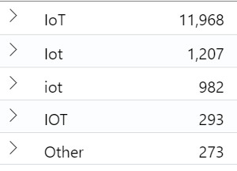

This is a story of how much effort and care we put into Azure SDK naming guidelines and consistency - even for the casing of a single letter…the last T in IoT.
In 2005, I read Framework Design Guidelines cover to cover, kept it on my desk, and referred to it often. The author of that book, Krzysztof Cwalina, is now the .NET language architect on the Azure SDK team and I get to work with him often. I blame him and his book for my current level of passion (read ‘obsession’) around naming things. You’ll soon see why I mention Krzysztof as this story unfolds.
This tale started last week when a friend of mine - the Azure IoT developer experience mastermind, the one and only - Paymaun (Digimaun) sent me this message:
While I was proud of Paymaun for getting his new package out there, the first thing I noticed was Azure.Iot instead of Azure.IoT. Notice the lowercase t? Probably not. After all it is just the casing of a single letter - what’s the big deal? I don’t know why I’m built this way, but it was a big deal to me. For most people this would be a P3, but for me a P1.
I sent him this message:
I had assumed that he made a mistake - which he rarely (if ever) does - but he quickly pointed me to the Azure SDK guidelines that have an explicit guideline to use Azure.Iot.
Since I have worked with .NET and IoT and have spent many hours working with customers in this space, I knew that something was off and I needed to figure out how to correct it. I’m not sure if this is just me, but every time I see an alternate casing for IoT, such as Iot, IOT, or, god forbid, iOt it makes my stomach churn.
I tracked this discrepancy down to this line in our Azure SDK for .NET Naming Guidelines where it clearly states that Iot should be used.
I quickly did some searching and discovered what seemed to be like a fairly consistent usage of IoT for .NET packages, so I moved forward to pinging Krzysztof (the Azure SDK for .NET language architect) with a quick message about my observation and he agreed that it should change to IoT and responded with - "Yeah, I think we should use IoT"

On the Azure SDK team, whenever we want to change a guideline we submit a change request for it to be reviewed by all of the language architects. This is for checks-and-balances and to ensure that we don’t rush into a situation that we can’t undo.
I submitted the request and thought we’d bring it up in the next architecture review meeting and catch the IoT packages that Paymaun just created before they go GA. GA means general availability and we can’t change casing after that point because the Azure SDKs have a backwards compatibility commitment and .NET is case-sensitive. Changing Iot to IoT would break backwards compatibility.
I submitted that review request on Wednesday and went on with my life.
Then on Thursday, Krzysztof sent a high pri email informing me that we are GA’ing the new Event Grid .NET SDK and it has class members with Iot in it and we need to quickly decide what we need to do. Because again, once we GA, we can’t change the casing.

At that point I went into super tactical mode to get the right people on the thread to make the call. This included the Event Grid folks, IoT folks, and the other language architects to see if we can make a decision over email. Responses start to roll in that Java is not okay with IoT and will go with Iot. Here’s a quote from, Jonathan Giles, our Java architect:
Python and TypeScript architects were indifferent and could go either way. Most of the other languages don’t have strong namespace to package name linkage, for example Python is azure-iot, TypeScript is @azure/iot, Java is azure-iot, and C99 is az_iot.
So we needed to decide if we should:
- Be consistent across languages and use
Ioteverywhere, because Java was not going to change or… - Diverge across the languages and use
IoTfor .NET andIotfor others.
I didn’t have enough data to make that decision. So I did some light querying on NuGet (.NET package management) and discovered that Microsoft has shipped packages with both Iot and IoT and some of our competitors and the .NET Framework team use Iot as well. I was under the impression that the .NET convention was moving towards Iot and I was warming up to the idea of it.
We also had a few folks chime in that they preferred Azure.IoT for the namespace and Iot for members names, such as IotClient. But at the time, we preferred to keep the casing consistent within a language. The .NET naming guidelines dictate that a 3 letter acronym should use Pascal casing, so in this case Iot. There is a clause that states you can override that guideline if it aligns with your brand, like IoT, but at the time we wanted consistency across namespace and members and we couldn’t find clear guidance on if we should override members with the same brand casing exception.
Since we wanted consistency in the language and we didn’t have consensus on moving to IoT, both Krzysztof and I decided that we were okay with Azure.Iot, even though we preferred Azure.IoT.
I even reached out to Jeffrey Richter, who is also an Azure SDK founding member and architect and he confirmed that the proper case is Iot by .NET naming convention standards. As an aside, imagine being on a team where you can just IM these folks and they respond…okay, back to the story.
With all of that info we finally decided to use Iot.
I closed my open proposal, informed the team of the decision, and we were content.
Well, at least everyone else was, but I didn’t sleep well that night. I kept seeing images of Azure.Iot and it just didn’t sit well with me.
I wasn’t settled, but I needed more data to convince folks to use IoT.
I did more searching (from my phone in a hotel room on a weekend getaway, I know, I know). I had to answer the question: “What other packages has Microsoft shipped with IoT in the name and what casing did they use?” and then I discovered this:
using Windows.IoT;
and I could not remove this image from my mind:
using Windows.IoT;
using Azure.Iot;
I knew that images of any dev having to type out those namespaces together and notice that discrepancy would have haunted me forever.
I IM’d Krzysztof with this new data on Friday afternoon and he gave the message a thumbs up.
Throughout the weekend, I thought about how I could come back to work and undo the decision that had been made, but I had no hard data (other than the difference in Windows and Azure casing) to back it up. I had to resolve this for myself and every Microsoft IoT dev using both Windows and Azure.
Come Monday morning I went into action. The Event Grid package was going to ship that morning so I had to move fast.
I pinged a friend on the NuGet team, Loïc Sharma to see if we could get more data on IoT casing usage in existing NuGet packages.
Luckily, he had the data I needed to prove my point. The overwhelming majority case for IoT was in fact IoT and not Iot.

Loïc and Joel Verhagen are working on making that granularity level of NuGet data available as a service. Having that data definitely helped support my hunch in this case and I hope they make this data available to you all soon as a service. But for now, you can host it yourself. Check out this repo for more info: https://github.com/joelverhagen/ExplorePackages
I quickly pinged the devs responsible for shipping the Event Grid package, Josh Love and Laurent Mazuel, and asked them to hold the release until I discuss with the Azure IoT team. They were kind:
I then pinged another friend of mine - my IoT guru, Olivier Bloch (I’m lucky to have so many IoT friends!) to see who the current folks are that should help us make this decision.
He hooked me up with the right Azure IoT developer experience leadership folks and I quickly setup a meeting. Luckily they were all available at 11:30.
I first wanted to know if they had explicitly asked to move from IoT to Iot - or if this was just an oversight. (This was a very wise nudge from Krzysztof to ask this question. Just in case we, as the Azure SDK, missed this request.)
They thanked me for bringing this to their attention and confirmed that we should go with Azure.IoT and not Azure.Iot.
Great! My initial gut instincts were correct.
But, it wasn’t over. What should we do with other members, like class names, fields, properties, etc? None of us liked this casing: IoTClient or IoTTelemetry or IoTHub. But, Krzysztof wanted consistency in casing within the library.
I opened up Notepad and started typing out the variations of casing that we could use, for example:
IotHubConnectionString
IoTHubConnectionString
And that is when Krzysztof relaxed his views on consistency within the language. All of us agreed that in this case we preferred IotHubConnectionString and IotClient instead of the capital T versions.
We then wrote this down:
- Namespace is
Azure.IoTandIoTis never repeated in the namespace. - Compound words use standard Pascal casing:
Iot, i.e.IotClient, otherwise follow language conventions.
Since we had to release the Event Grid library within the next few minutes I had to ensure that both Azure SDK and Azure IoT agreed to this, so we went around the room of developers, architects, and PMs and individually confirmed that they were okay with these new guidelines.
Luckily, the Event Grid library wasn’t exposing a new namespace and the members were already using Iot, so they didn’t require any changes and I okay’d them moving forward with the release.
I then updated the thread, multiple Teams chats, re-opened the GH issue, and submitted a new PR to update the guidelines. Which can now be found here: Azure SDK for .NET Guidelines
Paymaun has already submitted a PR to update his packages to use Azure.IoT instead of Azure.Iot - which is okay in this case since backwards compatibility requirements only take effect once the library has GA’d, which those have not yet.
We’ll now be able to have this…
using Windows.IoT;
using Azure.IoT;
… and I can sleep at night.
The lessons learned for me on this are:
- Listen to your gut, but drive discussions with data. I should have started with the NuGet research on existing
IoTusage and dug deeper into existing/competitive data before reacting. The ExplorePackages project was key here. - Be open to change. Krzysztof has literally written books on naming things, but was open to changing his stance on using the same casing for all cases and I respect that. Guidelines are just that guide-lines, not rules, they can change and if you want them to change you need to speak up and make a case for it.
- Work through decisions with visuals. Cracking open Notepad in that meeting with the Azure IoT team helped us see everything visually and caused emotional reactions that could not have happened with spoken words.
- Make and keep connections. There’s no way I would have been able to catch this if Paymaun didn’t send it to me and I wouldn’t have been able to gather the data I needed if I didn’t know Olivier or Loïc or Krzysztof or Jeff…the list goes on. Be kind and surround yourself with good people who will help when you ask. I’m very fortunate to be surrounded by people who care about this kind of stuff, are helpful, and don’t shrug it off as low pri.
I hope you enjoyed this story.
Jon